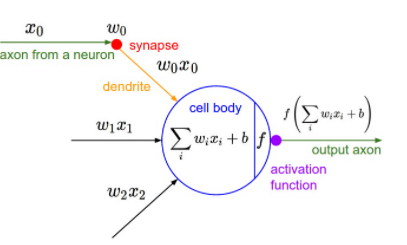

퍼셉트론: 신경망의 기초
개념과 구조
퍼셉트론(Perceptron)
: 인공신경망의 가장 기본적인 단위로, 다수의 신호를 입력받아 하나의 신호를 출력하는 구조
출현
: 1957년 프랑크 로젠블라트(Frank Rosenblatt)에 의해 소개

그림 1. 퍼셉트론 구조(입력, 가중치·편향, 출력)
퍼셉트론의 동작 방식:
입력 신호
: 외부로부터 들어오는 데이터
가중치
: 각 입력 신호의 중요도를 나타내는 값
편향
: 뉴런이 얼마나 쉽게 활성화될지를 조정하는 매개변수
작동 원리
초기 퍼셉트론은 주로 계단 함수(Unit Step Function)를 사용하여 0 또는 1의 이진 값을 출력했습니다.
y =
0, if w
1
x
1
+ w
2
x
2
+ b ≤ 0
1, if w
1
x
1
+ w
2
x
2
+ b > 0
단층 퍼셉트론의 한계
성공
: AND, OR 게이트와 같이 선형적으로 분리 가능한 문제 해결 가능
실패
: XOR(Exclusive OR) 문제와 같이 비선형적으로 분리 불가능한 문제에 한계
마빈 민스키의 증명
: "Perceptrons" 저서를 통해 단층 퍼셉트론이 XOR 문제를 해결할 수 없음을 증명
결과
: 인공신경망 연구의 "침체기" 경험 발생
이전
2 / 10
다음